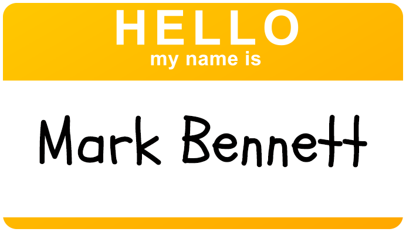
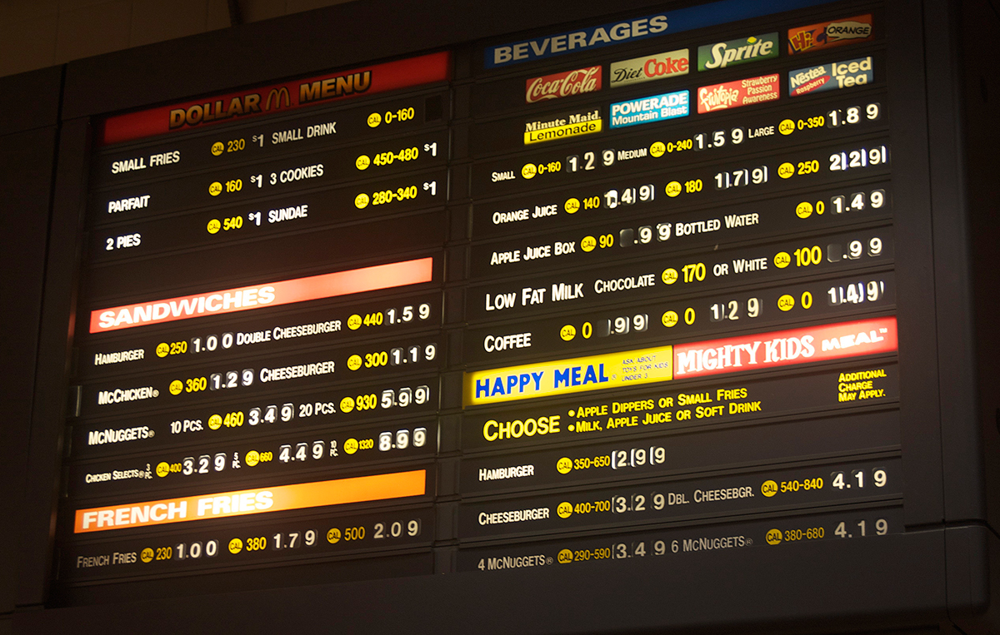
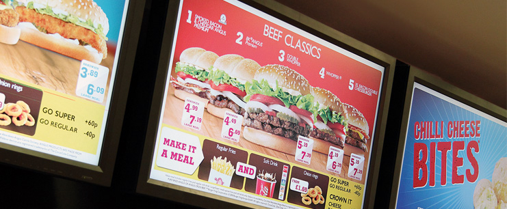
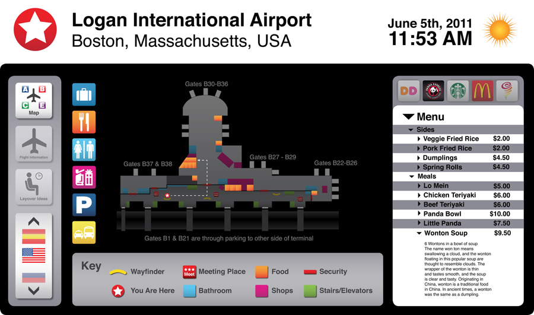
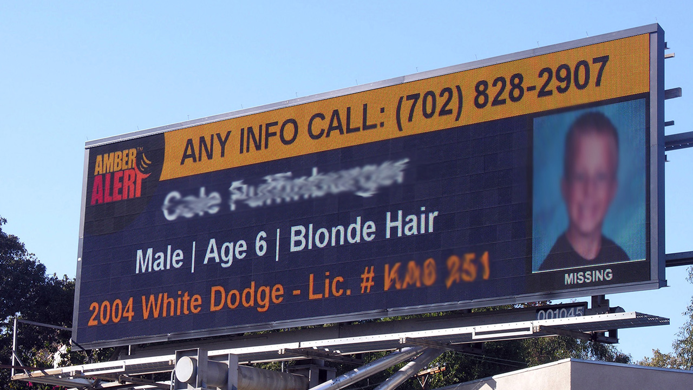
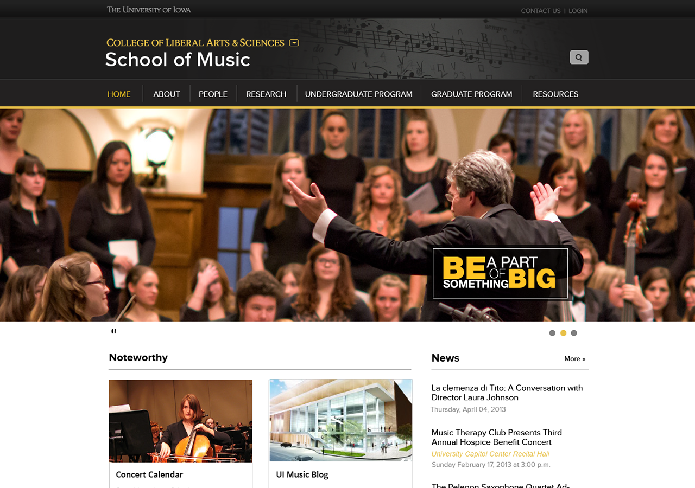
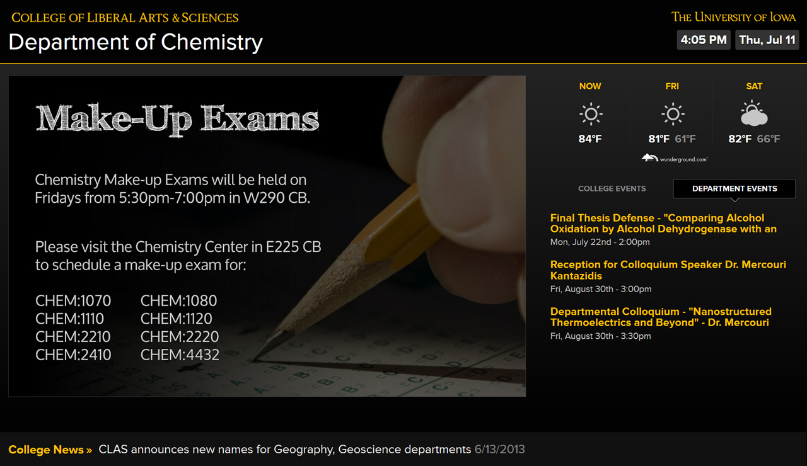
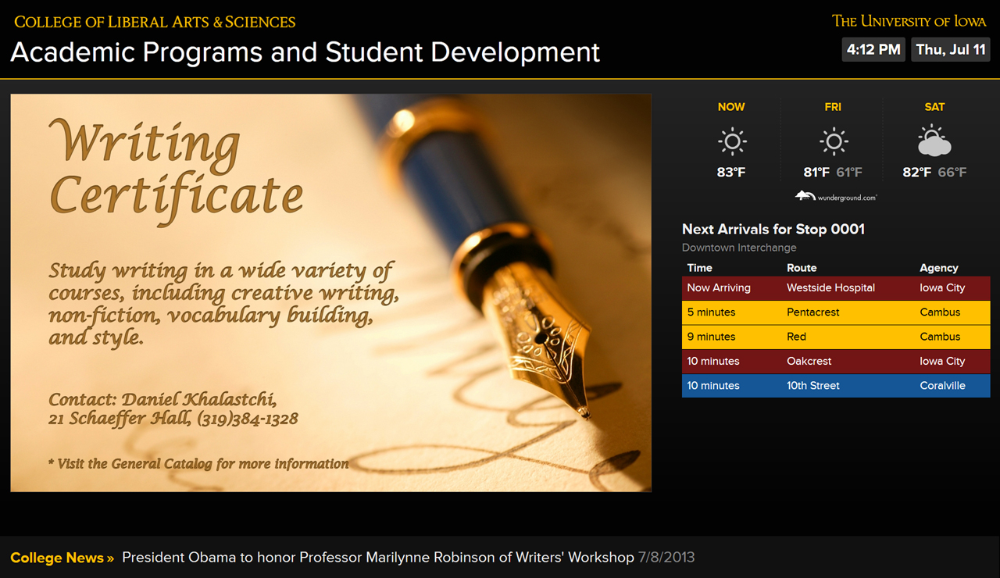
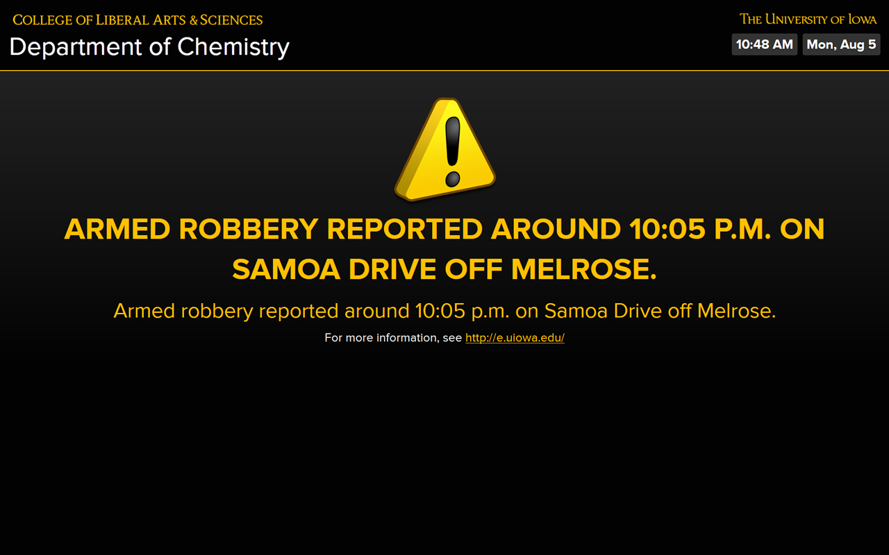
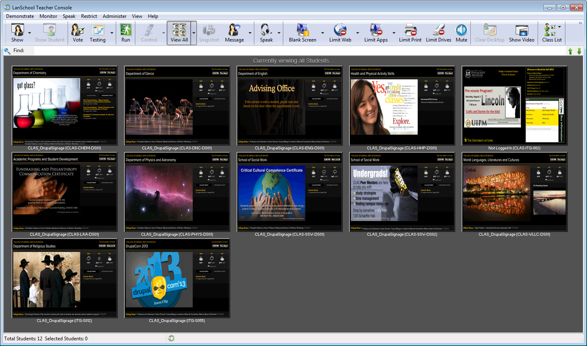

Help control the digital signage population, have your signs Drupalized!
How the CLAS Web Services Group at the University of Iowa developed a digital signage solution using Drupal.
Created by the CLAS Web Services Group

Application Developer, Database Developer, Web Developer
CLAS Web Services Group
College of Liberal Arts & Sciences - The University of Iowa
Why digital signage?
Why we tried Drupal...
What we've got so far...
Where it's worked...
What we need to do next...
Why digital signage?
Save time and money vs. printed signage
Dynamic vs. static content
Modern look (graphics and animations)
Centralized control to manage multiple locations
Printed Signage

Digital Advertisement

Information and Wayfinding

Emergency Alerts

Why we tried Drupal...
High cost and increasing frustration with current non-Drupal options
AxisTV License - $1200 one-time fee per display
Service Agreement - 11% per year
Building Package License - $10000 enterprise fee
Service Agreement - 17% per year
Local Hosting License - $950 one-time fee
Media Player Fee - $725 per year per display
Service Agreement - 20% of total software cost per year
*Cloud Hosting Option - $40 monthly fee per player
Why we tried Drupal...
Massive redesign using Drupal for CLAS department websites


What we've got so far...
Theme based on identity used for the CLAS department websites


What we've got so far...
Responsive design for various display types
Responsive Theme
One-, Two- and Three-column flexible layouts
Tablets, 720p, 1080p, and 4k displays
Landscape and Portrait Orientations
What we've got so far...
Core and modules
Drupal Core and modules
Core
CAS
Chaos Tools
Feeds
Organic Groups
Panelizer
Panels
Views
Live Demo!
What we've got so far...
Additional Scripts
Additional Scripts
Date/Time
Weather Forecast - wunderground.com
BONGO (Bus On The Go) - ebongo.org
Twitter - twitter.com
Scrolling News marquee
Rotating Event tabs
Department Directory Listing*
Weather Forecast
Create a shell script (forecast.sh) to pull the forecast from Weather Underground® and create a local forecast.json file:
#!/bin/sh
mv -f <path>/forecast.json <path>/forecast.json.bak
curl -s http://api.wunderground.com/api/<WeatherUndergroundID>/forecast/geolookup/
conditions/q/IA/Iowa_City.json?pws=0 -o "<path>/forecast.json"
Weather Forecast
Create a cronjob to run the forecast.sh script on a schedule:
MAILTO="email@domain.edu"
*/3 * * * * root <path>/forecast.sh >/dev/null 2>&1
Weather Forecast
Tell the JavaScript to read from the local forecast.json file:
function displayWeather() {
$.ajax({
cache : false,
type : 'GET',
url : '<path>/forecast.json',
dataType : 'json',
error : function() {
// Error handling
},
success : function(parsed_json) {
// Do something here
}
});
}
What we've got so far...
Hawk Alert (Emergency Notification System)
Hawk Alert
Create a shell script (hawkalert.sh) to pull the Hawk Alert CAP Feed and create a local hawkalert.xml file:
#!/bin/sh
mv -f <path>/hawkalert.xml <path>/hawkalert.xml.bak
curl -s http://emergency.uiowa.edu/hawk-alert-CAP -o "<path>/hawkalert.xml"
Hawk Alert
Create a cronjob to run the hawkalert.sh script on a schedule:
MAILTO="email@domain.edu"
*/5 * * * * root <path>/hawkalert.sh >/dev/null 2>&1
Hawk Alert
Tell the JavaScript to read from the local hawkalert.xml file:
function displayHawkAlert() {
$.ajax({
cache : false,
type : 'GET',
url : '<path>/hawkalert.xml',
dataType : 'xml',
error : function() {
// Error handling
},
success : function(xml) {
if( message has children ) {
// Do something here
}
else {
// Resume normal content
}
}
});
}

[ Example of a Hawk Alert warning in progress on the digital signage ]
What we've got so far...
"Media Player" Setups
Standard "Media Player"
CLAS IT Standard Plus Image (SCCM) 32-bit Windows 7 Enterprise
System updates received monthly via SCCM
System balloon notifications hidden
Microsoft IE9 with Kiosk Mode feature enabled
Group Page launched automatically on boot
LanSchool Classroom Management software - lanschool.com

Mac Mini
Customized Mac OS X Image (Still in testing mode)
Google Chrome with Presentation Mode feature enabled
Automatic Login
Group Page launched automatically on boot
Remote access available through ARD, Casper or LanSchool
Mac Mini ($599) + HDMI cable ($20)
Raspberry Pi
Raspbian OS Image
Google Chromium with Kiosk and Incognito modes enabled
Group Page launched automatically on boot
Preconfigured setup available on additional SD cards
Powered via Micro-USB cable connected to display
Raspberry Pi Kit + Micro-USB cable + additional SD card = $75
Where it's worked...
Academic Programs and Student Development
Chemistry
Dance
Division of World Languages
English
Health and Physical Activity Skills
Physics and Astronomy
Religious Studies
School of Social Work
DrupalCorn 2013
What we need to do next...
Cleanup from the ground up
Add more widget options:
Video Playlists*, Directory Listings*
Course Listings (from MAUI), Interactive Wayfinding
Create Modules (ITS)
Installation Profiles on GitHub
Two different installation profiles are available on GitHub:
signsbasic
signsorganicgroup
Acknowledgements
Ben Speare and Mark Fullenkamp (CLAS Web Services)
Lance Bolton, Rick Bennett, Bob Irwin, Kelvin Lehrman (CLAS IT)
Mike Hendrickson, Cole Metcalf (CLAS IT)
Andy Jenkins (Graduate College)
Josh Kaine (University Creative Services)